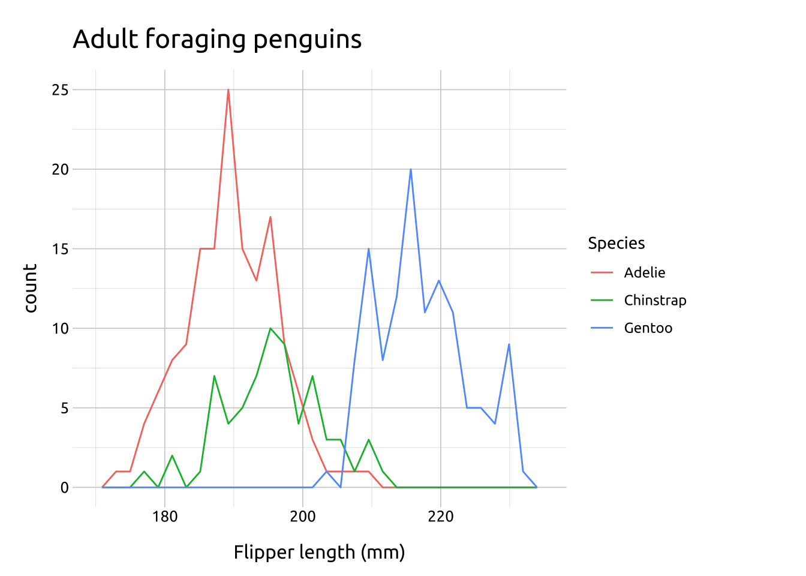
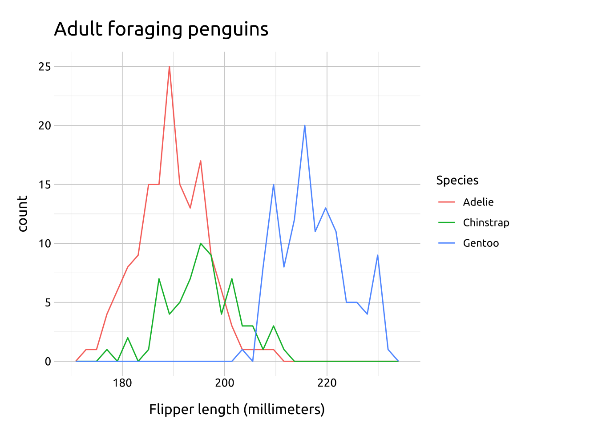

Overlapping Frequency Polygons
PACKAGES:
Install packages.
Code
install.packages("palmerpenguins")
library(palmerpenguins)
library(ggplot2)DATA:

The penguins data.
Code
penguins <- palmerpenguins::penguins
glimpse(penguins)Rows: 344
Columns: 8
$ species <fct> Adelie, Adelie, Adelie, Adelie, Adelie, Adelie, Adel…
$ island <fct> Torgersen, Torgersen, Torgersen, Torgersen, Torgerse…
$ bill_length_mm <dbl> 39.1, 39.5, 40.3, NA, 36.7, 39.3, 38.9, 39.2, 34.1, …
$ bill_depth_mm <dbl> 18.7, 17.4, 18.0, NA, 19.3, 20.6, 17.8, 19.6, 18.1, …
$ flipper_length_mm <int> 181, 186, 195, NA, 193, 190, 181, 195, 193, 190, 186…
$ body_mass_g <int> 3750, 3800, 3250, NA, 3450, 3650, 3625, 4675, 3475, …
$ sex <fct> male, female, female, NA, female, male, female, male…
$ year <int> 2007, 2007, 2007, 2007, 2007, 2007, 2007, 2007, 2007…CODE:
Create labels
Map flipper_length_mm to the x and species to group
Map species to the color aesthetic inside the geom_freqpoly()
Code
labs_ovrlp_freq_poly <- labs(
title = "Adult foraging penguins",
x = "Flipper length (millimeters)",
color = "Species")
ggp2_ovrlp_freq_poly <- ggplot(data = penguins,
aes(x = flipper_length_mm,
group = species)) +
geom_freqpoly(aes(color = species))
ggp2_ovrlp_freq_poly +
labs_ovrlp_freq_polyGRAPH:
